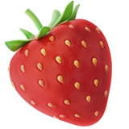

french fries actually originated from Belgium.
the fat and protein molecules in milk reflect light, giving it its white color.
popcorn is over 5,000 years old, with evidence of popped kernels found in a Mexican cave dating back to around 3600 BC
the pretzel's knot shape was used by monks to represent the Holy Trinity, with the three holes symbolizing the Father, the Son, and the Holy Spirit.
the United States is the world's largest consumer of ice cream, with the average American eating 48 pints per year.

strawberries contain more vitamin C than oranges.